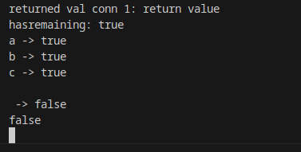

Introduction
Let me introduce my self, Who is Fadhil? Fadhil Riyanto (real-name), is a self-taught system programmer which live in Indonesian, This is some short & dirty tutorial about computer science and litte about math.
Contributing
Found a mistake? You can freely DM me on telegram or just emailed me on me@fadev.org.
Language
Because I'm indonesian, some part of this website may written in indonesian. But I will try to translating it into english language.
Note
[EN] If you found a mistake, let me know. BIG thanks!
[ID] Jika kamu menemukan sesuatu yang sepertinya itu salah, bisa langsung kasih kabar ke saya. Terimakasih.
System programming
How data movement changes a destination register
This snippets is from "Computer Systems A Programmer’s Perspective, by Randal E. Bryant and David R. O’Hallaron"
As described, there are two different conventions regarding whether and how data movement instruc- tions modify the upper bytes of a destination register. This distinction is illustrated by the following code sequence:
1 movabsq $0x0011223344556677, %rax %rax = 0011223344556677
2 movb $-1, %al %rax = 00112233445566FF
3 movw $-1, %ax %rax = 001122334455FFFF
4 movl $-1, %eax %rax = 00000000FFFFFFFF
5 movq $-1, %rax %rax = FFFFFFFFFFFFFFFF
In the following discussion, we use hexadecimal notation. In the example, the instruction on line 1 initializes register %rax to the pattern 0011223344556677. The remaining instructions have immediate value −1 as their source values. Recall that the hexadecimal representation of −1 is of the form FF. . .F, where the number of F’s is twice the number of bytes in the representation. The movb instruction (line 2) therefore sets the low-order byte of %rax to FF, while the movw instruction (line 3) sets the low-order 2 bytes to FFFF, with the remaining bytes unchanged. The movl instruction (line 4) sets the low-order 4 bytes to FFFFFFFF, but it also sets the high-order 4 bytes to 00000000. Finally, the movq instruction (line 5) sets the complete register to FFFFFFFFFFFFFFFF.
some useful links
General embedded ASM linked in C
this is program is succesfully compiled with as, but failed to run due to SIGSEGV.
this is will fail
.data
val:
.byte 0xF6
.byte 0xF6
.byte 0xF6
.byte 0xF6
.globl do_asm
do_asm:
# movl 0x12345678, %eax
# movl 0xAABBCCDD, %edx
# # move edx 8 bit high into al (eax)
# movb %dh, %al
movq $9, %rax
ret
this is will compile
.data
val:
.byte 0xF6
.byte 0xF6
.byte 0xF6
.byte 0xF6
.globl do_asm
.text
do_asm:
# movl 0x12345678, %eax
# movl 0xAABBCCDD, %edx
# # move edx 8 bit high into al (eax)
# movb %dh, %al
movq $9, %rax
ret
the difference only in .text section
Move sign & zero-extends a single byte
movabsq
simplenya, ini kepanjangan dari move absolute quad word (64 bit) contoh kecil

itu contoh initial moveabsq int 64 bit, lalu
 contoh move 1 bytes
contoh move 1 bytes
 move 16 bit, 2 bytes word
move 16 bit, 2 bytes word
 move 32 bit, 4 bytes, tapi disini keformat sebagai int32 wkwk
move 32 bit, 4 bytes, tapi disini keformat sebagai int32 wkwk
 full 64 bit move
full 64 bit move
x86_64 register (fiks technical grade)

analisis kenapa pakai movabsq, daripada movq
analisis patch movq pakai 0xffffffff
ada asm

kita akan memaksa dari 0x7fffffff menjadi 0xffffffff untuk membuktikan bahwa harusnya movq error, dan digantikan oleh movabsq
initial dulu

lalu, next replace address 0x555555555119 dengan
set {unsigned char[8]}0x555555555119 = {0x48, 0xc7, 0xc0, 0xff, 0xff, 0xff, 0xff, 0x90}
confirmed berubah jadi 0xffffffff disini

saatnya kita lanjutkan, apakah error

Rust stuff
Welcome in this rust stuff section.
Rust cursor, How it works
Cursor in rust basically just a in-memory implementation of Seek. see fseek() here
Imagine, we have a file. and this is representation of contents
abcde
seek start from 1, is bcde, start from 2 is cde and so-on, this is also happen when we use seek from end, for example, seek end -1 is mean e, -2 is de, etc.
From code perspective
this is signature of cursor
#![allow(unused)] fn main() { pub struct Cursor<T> { inner: T, pos: u64, } }
and also, this struct implement Write and Seek
so, in order to understanding this concept, let code first in C
#include <string.h>
#include <stdlib.h>
#include <stdio.h>
struct seekfd {
FILE *file;
};
int start_open(struct seekfd *seekfd) {
seekfd->file = fopen("a.txt", "r");
if (seekfd->file == NULL) {
fprintf(stderr, "%s", "error");
return -1;
}
}
int do_op(struct seekfd *seekfd) {
char allocated_buf[2048];
memset(allocated_buf, 0, 2048);
fseek(seekfd->file, 1, SEEK_SET);
int ret = fread(allocated_buf, 1, 3, seekfd->file);
printf("%s", allocated_buf);
}
int main() {
struct seekfd seekfd;
int ret = start_open(&seekfd);
if (ret < 0) {
return -9;
}
ret = do_op(&seekfd);
if (ret < 0) {
return ret;
}
}
compile with
clang fseek.c -o p -g
next step, create dummy files named a.txt with content abcdefghijklmnopqr
first run with fseek(seekfd->file, 0, SEEK_SET); = abc
second run with fseek(seekfd->file, 1, SEEK_SET); = bcd
etc...
this concept is basically same in Rust
Rust context
this is small example show Seek works (in-memory) instead utilize real file
use std::io::prelude::*; use std::io::{self, SeekFrom}; use std::io::Cursor; fn write_bytes<W: Write + Seek>(mut w: W) -> io::Result<()> { w.seek(SeekFrom::Start(5))?; for i in 1..6 { w.write(&[i])?; } Ok(()) } fn main() { let mut buf = Cursor::new(vec![0; 20]); write_bytes(&mut buf).unwrap(); println!("{:?}", &buf.get_ref()); // print vector }
this is the output
[0, 0, 0, 0, 0, 1, 2, 3, 4, 5, 0, 0, 0, 0, 0, 0, 0, 0, 0, 0]
instead, we change SeekFrom::Start(5) with SeekFrom::Start(10), the write will started at offset 10. this is the output
[0, 0, 0, 0, 0, 0, 0, 0, 0, 0, 1, 2, 3, 4, 5, 0, 0, 0, 0, 0]
Rust bytes has_remaining() method
this function return whatever any best left on buffer. example, let make simple tcp/ip
#![allow(unused)] fn main() { impl Connection { pub fn new(stream: TcpStream) -> Connection { Connection { stream: BufWriter::new(stream), buffer: BytesMut::with_capacity(4096) } } pub async fn read(&mut self) -> std::result::Result<Option<Frame>, Box<dyn std::error::Error + Send + Sync>> { let _ = self.stream.read_buf(&mut self.buffer).await; println!("hasremaining: {}", self.buffer.has_remaining()); while self.buffer.has_remaining() { let bytes = self.buffer.get_u8(); println!("{} -> {}", bytes as char, self.buffer.has_remaining()); } println!("{}", self.buffer.has_remaining()); // Frame::check(&mut self.buffer); Ok(Some(Frame::Null)) } } }
let's see the server result using ncat

which the input is something look like this
[22:55:41] fadhil_riyanto@integral2 /home/fadhil_riyanto [SIGINT]
> ncat 127.0.0.1 6380
abc
from this output, we know
hasremaining: true <--- this is initial, didn't mean anything
a -> true <--- a already read, but next char is b, why this is true
b -> true <--- next is c, also true
c -> true <--- next is \n char, also true
-> false <--- this is false because no next chars
false <--- confirm
Also, get_u8 returns the first byte in the buffer. Each time it's called, it advances the position, so subsequent calls return the next bytes.
How Rust into() Box + Error analysis
suppose, we have function return signature like this
#![allow(unused)] fn main() { std::result::Result<Option<Frame>, Box<dyn std::error::Error + Send + Sync>> }
and then, we return something like this from our function
#![allow(unused)] fn main() { return Err("connection reset".into()) }
how the into() works?
analysis
look at this snippet
#![allow(unused)] fn main() { #[cfg(not(no_global_oom_handling))] #[stable(feature = "rust1", since = "1.0.0")] impl<'a> From<&str> for Box<dyn Error + Send + Sync + 'a> { /// Converts a [`str`] into a box of dyn [`Error`] + [`Send`] + [`Sync`]. /// /// [`str`]: prim@str /// /// # Examples /// /// ``` /// use std::error::Error; /// use std::mem; /// /// let a_str_error = "a str error"; /// let a_boxed_error = Box::<dyn Error + Send + Sync>::from(a_str_error); /// assert!( /// mem::size_of::<Box<dyn Error + Send + Sync>>() == mem::size_of_val(&a_boxed_error)) /// ``` #[inline] fn from(err: &str) -> Box<dyn Error + Send + Sync + 'a> { From::from(String::from(err)) } } }
if we go deeper into From::from, we found this
#![allow(unused)] fn main() { #[inline] fn from(err: String) -> Box<dyn Error + Send + Sync + 'a> { struct StringError(String); impl Error for StringError { #[allow(deprecated)] fn description(&self) -> &str { &self.0 } } impl fmt::Display for StringError { fn fmt(&self, f: &mut fmt::Formatter<'_>) -> fmt::Result { fmt::Display::fmt(&self.0, f) } } // Purposefully skip printing "StringError(..)" impl fmt::Debug for StringError { fn fmt(&self, f: &mut fmt::Formatter<'_>) -> fmt::Result { fmt::Debug::fmt(&self.0, f) } } Box::new(StringError(err)) } }
nb: actually StringError is string aliases. then, we see in this section. we created a heap-allocated using Box::new(StringError(err)).
Rust buffer advance
this simple article show how buffer advance works
use bytes::Buf; fn main() { let mut buf = &b"hello world"[..]; println!("{}", String::from_utf8_lossy(buf.chunk())); buf.advance(6); println!("{}", String::from_utf8_lossy(buf.chunk())); }
and the result
#![allow(unused)] fn main() { hello world world }
Rust RESP get_line analysis
if we look at simple tokio redis example (mini redis), we can see how the data is parsed. look at this
the resp is generally read something like this `+abc\r\n'
this is the code that actually crop down the buffer
#![allow(unused)] fn main() { fn get_line<'a>(src: &mut Cursor<&'a [u8]>) -> Result<&'a [u8], Error> { // Scan the bytes directly let start = src.position() as usize; // Scan to the second to last byte let end = src.get_ref().len() - 1; for i in start..end { if src.get_ref()[i] == b'\r' && src.get_ref()[i + 1] == b'\n' { // We found a line, update the position to be *after* the \n src.set_position((i + 2) as u64); // Return the line return Ok(&src.get_ref()[start..i]); } } Err(Error::Incomplete) } }
and I will show you how they works (algorithm)
variables setup
we have start and end, which consist of
#![allow(unused)] fn main() { let start = src.position() as usize; let end = src.get_ref().len() - 1; }
the src.position() always return 0, also depending on the context. src.get_ref().len() return the length of the buffer, for example, +rand\n\n has length 7.
because we wan't to read two chars at the end, which is \r and \n
so we substract length with 1, this is avoid buffer overflow
suppose this situation:
buf: +rand\n\n
when we add everything with 1, we got this
idx: 012345 6 7, it is idx[7]is found? no, so we need to sub with 1, the idx is something like this
idx: 012345 6, no overflow
then we check the i and i + 1, make sure there is \r\n
set position
now, we set the cursor to the next incoming buffer. which after \r\n
#![allow(unused)] fn main() { src.set_position((i + 2) as u64); }
suppose:
+rand\r\n+randomsomething\r\n
012345 6 ^
^^ ^ this is i + 2, indicates next buffer
ii+1 orig i
Math
Welcome in this section.
Set operations formula
Union of Two Sets (cardinality)
\[ |A \cup B| = |A| + |B| - |A \cap B| \]
how to read:
whole A and B add together, its make a data duplication on center of venn diagram, we remove that duplication using \( |A \cap B| \)
Intersection (steps)
its flip of Union \[ |A \cup B| = |A| + |B| - |A \cap B| \] \[ |A \cap B| = |A| + |B| - |A \cup B| \]
Intersection of three sets
\[ |A \cup B \cup C| = |A| + |B| + |C| - |A \cap B| - |A \cap C| - |B \cap C| + |A \cap B \cap C| \]
how it works, de remove data duplication two times on \( |A \cap B| \), \( |B \cap C| \), and \( |B \cap C| \), then fill the empty section on the center which \( |A \cap B \cap C| \)
This is proof of concept by nice guy on internet: https://www.youtube.com/watch?v=vVZwe3TCJT8.
Difference
\[ |A - B| = |A| - |A \cup B| \]
Symetric difference
1. General formula
\[ A \space \triangle \space B = (A \cup B) - (A \cap B) \] Cardinals version: \[ | A \space \triangle \space B | = |A - B| + |B - A| \] \[ | A \space \triangle \space B | = |A| + |B| - 2|A \cap B| \]
2. Symetric difference properties
-
\( A \space \triangle \space B = B \space \triangle \space A \)
-
\( (A \space \triangle \space B) \space \triangle C = A \space \triangle \space (B \space \triangle C) \)
-
\( (A \space \triangle \space \emptyset) = A \), why?
- \(A \space \triangle \space B = (A \cup B) - (B \cap A) \)
- \(A \space \triangle \space \emptyset = (A \cup \emptyset) - (\emptyset \cap A) \), but
- \( (A \cup \emptyset) = A \) and \( (\emptyset \cap A) = \emptyset \)
- \( (A - \emptyset) = A \)
-
\( (A \space \triangle \space A) = \emptyset \)
Set stuff
there is some intresting question about discrete math
why \( \mathcal{P}(\emptyset) = \lbrace \emptyset \rbrace \)
consider \( \mathcal(S) \) where \( S \) is a set, for example
- if \( S = \lbrace a \rbrace \), then \( \mathcal{P}(S) = \lbrace \emptyset, \lbrace a \rbrace \rbrace \), same as \( \mathcal{P}(a) \)
- if \( S = \lbrace a, b \rbrace \), then \( \mathcal{P}(S) = \lbrace \emptyset, \lbrace a \rbrace, \lbrace b \rbrace, \lbrace a, b \rbrace \rbrace \), same as \( \mathcal{P}(a, b) \)
- if \( S = \lbrace \emptyset \rbrace \), then \( \mathcal{P}(S) = \lbrace \emptyset, \lbrace \emptyset \rbrace \rbrace \), same as \( \mathcal{P}(\emptyset) \)
so, because \( \lbrace \rbrace \) usually hidden, \( \mathcal{P}(\emptyset) = \lbrace \emptyset \rbrace \)
let \( A = \emptyset, B = \emptyset \), how to \( A \times B \)
Consider \( A \times B = \lbrace (a,b) | a \in A, b \in B \rbrace \)
because
- A is empty, no elements can be paired
- B is also empty
conlusion: no paired element = empty
proof by cardinality \( |A| = 0, |B| = 0, \text{so, when } |A \times B| = |A| \times |B| = 0 \times 0 = 0 \)
does \( P(\emptyset) = \lbrace \lbrace \rbrace \rbrace = \lbrace \emptyset \rbrace \) ?
true, this is due \( \lbrace \emptyset \rbrace \) same as \( \lbrace \lbrace \rbrace \rbrace \), then consider example \( P(a) = \lbrace \lbrace \rbrace, \lbrace a \rbrace\rbrace \)
Suppose X and Z are independent of each other
- \( | \mathcal{P}(X \cap Z)| \)
- \( | X - Z | \)
- \( | X \oplus Z | \)
- \( | X \cap Z | \)
- \( | \mathcal{P}(X) \cup \mathcal{P}(Z)| \)
- \( | \overline{\mathcal{P}(X) \cup \mathcal{P}(Z)}| \)
nb: bagian ini belum jadi
Logika
Ringkasan ini dibuat sebagian sebagian dari Kuliah IF1220 Matematika Diskrit ITB oleh bapak Rinaldi Munir. dan berbagai sumber seperti Wikipedia, ChatGPT dsb
Proposisi
adalah pernyataan bahwa suatu dua perbandingan adalah sama besar, contoh
- \( \frac{a}{b}=\frac{c}{d} \)
- \( 4 = 2 * 2 \)
- 13 adalah bilangan ganjil
- Untuk sembarang bilangan bulat \( n >= 0 \), maka \( 2n \) adalah genap
contoh yang bukan
- Isilah gelas tersebut dengan air
- \( x + 3 = 8 \)
- \( x > 3 \)
dan, Proposisi dilambangkan dengan huruf kecil seperti \( p, q, r, ... \)
Bentuk bentuk nya
- Proposisi atomik
bentuk proposisi tunggal, contoh
- 2n selalu genap untuk n=0, 1, 2, …
- Ibukota Maluku Utara adalah Ternate
- proposisi majemuk
diantaranya:
- conjunction (and): \( \wedge \)
- disjunction (or): \( \vee \)
- negation (!n): \( ~ \)
- exclusive disjunction (xor): \( \oplus \)
Table
| p | q | r | p ∧ q | ¬q | ¬q ∧ r | (p ∧ q) ∨ (¬q ∧ r) |
|---|---|---|---|---|---|---|
| T | T | T | T | F | F | T |
| T | T | F | T | F | F | T |
| T | F | T | F | T | T | T |
| T | F | F | F | T | F | F |
| F | T | T | F | F | F | F |
| F | T | F | F | F | F | F |
| F | F | T | F | T | T | T |
| F | F | F | F | T | F | F |
nb:
- Tautologi adalah pernyataan logika yang selalu benar, tidak peduli nilai kebenaran dari komponen-komponennya. contoh
| p | q | p ∧ q | ¬(p ∧ q) | p ∨ ¬(p ∧ q) |
|---|---|---|---|---|
| T | T | T | F | T |
| T | F | F | T | T |
| F | T | F | T | T |
| F | F | F | T | T |
- Kontradiksi adalah pernyataan logika yang selalu salah, tidak peduli nilai kebenaran dari komponen-komponennya. contoh
| p | q | p ∧ q | p ∨ q | ¬(p ∨ q) | (p ∧ q) ∧ ¬(p ∨ q) |
|---|---|---|---|---|---|
| T | T | T | T | F | F |
| T | F | F | T | F | F |
| F | T | F | T | F | F |
| F | F | F | F | T | F |

| p | q | p ∧ q | ¬(p ∧ q) | ¬p | ¬q | ¬p ∨ ¬q |
|---|---|---|---|---|---|---|
| T | T | T | F | F | F | F |
| T | F | F | T | F | T | T |
| F | T | F | T | T | F | T |
| F | F | F | T | T | T | T |
Hukum hukum nya
| Bahasa Indonesia | Bahasa Inggris | Contoh |
|---|---|---|
| Hukum Identitas | Identity Law | p ∧ T ≡ p, p ∨ F ≡ p |
| Hukum Dominasi | Domination Law | p ∨ T ≡ T, p ∧ F ≡ F |
| Hukum Idempotensi | Idempotent Law | p ∨ p ≡ p, p ∧ p ≡ p |
| Hukum Negasi | Negation Law | p ∨ ¬p ≡ T, p ∧ ¬p ≡ F |
| Hukum Komutatif | Commutative Law | p ∨ q ≡ q ∨ p, p ∧ q ≡ q ∧ p |
| Hukum Asosiatif | Associative Law | (p ∨ q) ∨ r ≡ p ∨ (q ∨ r) |
| Hukum Distributif | Distributive Law | p ∨ (q ∧ r) ≡ (p ∨ q) ∧ (p ∨ r) |
| Hukum De Morgan | De Morgan’s Laws | ¬(p ∧ q) ≡ ¬p ∨ ¬q, ¬(p ∨ q) ≡ ¬p ∧ ¬q |
| Hukum Involusi | Double Negation / Involution | ¬(¬p) ≡ p |
| Hukum Implikasi | Implication Law | p → q ≡ ¬p ∨ q |
| Hukum Biimplikasi | Biconditional Law | p ↔ q ≡ (p → q) ∧ (q → p) |
Implikasi
Disebut juga proposisi bersyarat, seperti jika x maka y, notasinya \( p \rightarrow q\). \( p \) nya adalah condition, \( q \) nya adalah conlusion
| p | q | p → q |
|---|---|---|
| T | T | T |
| T | F | F |
| F | T | T |
| F | F | T |
versi versinya jika dijadikan teks
- Jika p, maka q (if p, then q)
- Jika p, q (if p, q)
- p mengakibatkan q (p implies q)
- q jika p (q if p)
- p hanya jika q (p only if q)
- p syarat cukup untuk q (p is sufficient condition for q)
- q syarat perlu bagi p (q is necessary condition for q)
- q bilamana p (q whenever p)
- q mengikuti dari p (q follows from p)
penjelasan kenapa \( F \rightarrow F = T \)
“If I win the lottery, I’ll buy you a car.”
I didn't win the lottery → (False)
I didn't buy a car → (False)
dan juga \( P \rightarrow Q \) sebenarnya sama dengan \( \sim{P} \vee Q \)
Penjelasan kenapa \( \sim (p \rightarrow q )\) itu sama dengan \( p \space \wedge \sim{q} \)
Kita tahu bahwa \( p \rightarrow q \) itu sebenarnya sama dengan \( \sim{p} \vee p \) , maka steps yang dibutuhkan hanya
- \( \sim(p \rightarrow q) \)
- \( \sim(\sim{p} \vee q) \)
- \( p \space \wedge \sim{q} \)
tabel varian implikasi (Proporsi bersyarat)
- Konvers (kebalikan): \( q \rightarrow p \)
- Invers : \( \sim p \rightarrow \sim q \)
- Kontraposisi : \( \sim q \rightarrow \sim p \)
| p | q | ¬p | ¬q | p → q | q → p | ¬p → ¬q | ¬q → ¬p |
|---|---|---|---|---|---|---|---|
| T | T | F | F | T | T | T | T |
| T | F | F | T | F | T | T | F |
| F | T | T | F | T | F | F | T |
| F | F | T | T | T | T | T | T |
Bi-impication
Intinya, operand kanan kiri harus sama, entah sama sama true, atau sama sama false. notasinya: \( p \leftrightarrow q \)
tabel kebenaran
| p | q | p ↔ q |
|---|---|---|
| T | T | T |
| T | F | F |
| F | T | F |
| F | F | T |
contoh
| p | q | p ↔ q | p → q | q → p | (p → q) ∧ (q → p) |
|---|---|---|---|---|---|
| T | T | T | T | T | T |
| T | F | F | F | T | F |
| F | T | F | T | F | F |
| F | F | T | T | T | T |
analogi simple:
-
Jika suatu bilangan genap, maka habis dibagi 2: \( \text{true} \leftrightarrow \text{true} = \text{true} \) -
Jika suatu bilangan bukan genap, maka tidak akan habis dibagi 2: \( \text{false} \leftrightarrow \text{false} = \text{true} \)
kumpulan soal Matematika Diskrit
No. 1
Dalam sebuah survei terhadap 120 orang, diperoleh data sebagai berikut:
- 65 orang suka kopi
- 70 orang suka teh
- 50 orang suka cokelat
- 30 orang suka kopi dan teh
- 28 orang suka kopi dan cokelat
- 26 orang suka teh dan cokelat
- 15 orang suka semua minuman
- Semua orang minimal menyukai satu jenis minuman
Tentukan:
- Banyak orang yang hanya suka kopi
- Banyak orang yang suka teh dan cokelat, tapi tidak suka kopi
- Banyak orang yang suka tepat dua jenis minuman
- Banyak orang yang hanya suka satu jenis minuman
No. 2
Jika diketahui
- S = {1,2,3 …, 15},
- A = { 2,3,5,7},
- B = { 1,3,5,7,9},
- C = {2,4,6,8}
Tentukan :
- A ∪ B ∪ C
- A ∩ C
- B - A
- (A’ ∩ B) - C
- (B - C) ∩ A’
No. 3
Dalam survei terhadap 80 mahasiswa, diperoleh data:
- 45 mahasiswa suka Matematika
- 38 mahasiswa suka Fisika
- 40 mahasiswa suka Kimia
- 20 mahasiswa suka Matematika dan Fisika
- 25 mahasiswa suka Fisika dan Kimia
- 18 mahasiswa suka Matematika dan Kimia
- 10 mahasiswa suka ketiga mata kuliah
- 8 mahasiswa tidak suka semua mata kuliah
tentukan
- Banyak mahasiswa yang suka hanya Matematika
- Banyak mahasiswa yang suka tepat dua mata kuliah
- Banyak mahasiswa yang suka Matematika atau Kimia tapi tidak Fisika
- Banyak mahasiswa yang suka hanya satu mata kuliah
format latex menyusul
asal usul rumus sudut vektor
awal mula dari rumus entah berantah ini. link untuk oprek rumus: https://proofwiki.org/wiki/Cosine_Formula_for_Dot_Product
\[ \vec{A} \cdot \vec{B} = |\vec{A}| |\vec{B}| cos(\theta) \]
lalu \[ \frac{\vec{A} \cdot \vec{B}}{|\vec{A}| |\vec{B}|} = cos(\theta) \]
lalu kita bisa balik, menjadi \[ cos(\theta) = \frac{\vec{A} \cdot \vec{B}}{|\vec{A}| |\vec{B}|} \]
\[ arccos(\frac{\vec{A} \cdot \vec{B}}{|\vec{A}| |\vec{B}|}) = \theta \]
solved!
transformasi elementer
beberapa notasi aneh disini diderive dari PPT kampus.
- \( H_{ij}A \): Swap baris i dengan baris j
- \( H_i^{(k)} \): mengalikan baris i dengan konstanta k
- \( H_{ij}^{(k)} \): hitung dulu konstanta k dikali baris j, lalu hasilnya ditambah baris i, simpan jg hasilnya ke baris i
- \( H_{i \space \space \space \space \space \space \space j}^{\space \space (k) \space \space \space (z)}(A)_i \): intinya, baris ke i dikalikan dgn k, kalau udah lanjut hitung baris j dikalikan z. hasilnya tentusaja simpan ke i
Cryptography
Alur konek ke RPC server telegram
step ini dibuat oleh seseorang dari masa lalu sekitar tahun 2020 yang akunnya telah terhapus, credit kepada Butthx
`originals written in telegram chat, but because I want to preserve it. I write it here
step 1:
Bikin koneksi ke server telegram pakai TCP yang tersedia (disini gwa pakai TCPIntermediate)
step 2:
Bikin random nonce dengan value int128
step 3:
Kirim bytes dari ReqPqMulti dengan value bytes dari nonce tadi.
step 4:
pick salah satu dari beberapa publick fingerprints yang diberikan dari results step3.
step 5:
Lakuin faktor bilangan pq yang diberikan dari results step3, dapetin lagi hasil pembagian dari pq tadi dengan hasil faktor, terus urutkan dari yang terkecil. untuk yang kecil di kasih nama p dan yang besar kasih nama g.
step 6:
bikin nonce baru (jangan ubah nonce yang lama) dengan value random int256.
step 7:
bikin hash (sha1) dari bytes PQInnerData ke telegram: bytes[pq,bytes p,bytes q,nonce,nonce baru,server nonce (dapet dari step3)]
step 8:
bikin padding dengan random bytes dengan panjang -(length bytes PQInnerData + length sha1) mod 255
step 9:
encrypt bytes[sha,bytes PQInnerData,padding] dengan RSA (pakai publik fingerprints tadi)
step 10:
kirim bytes ReqDhParams: bytes[nonce,server nonce, bytes p, bytes q, encrypted data (step9) ,fingerprint]
step 11:
bikin temporary aes key: bytes[sha1[bytes nonce baru, bytes server nonce],sha1[bytes server nonce, bytes nonce baru] slice 0 – 12]
step 12:
bikin temporary aes initial vector (IV): bytes[sha1[bytes server nonce, bytes nonce baru] slice 12 – end, sha1[bytes nonce baru,bytes nonce baru], bytes[nonce baru] slice 0 – 4 ]
step 13:
decrypt encryptedAnswer (dapet dari step 10) menggunakan AES-256-IGE pakai key sama iv tadi.
step 14:
parse decrypted answer tadi ke TLSchema/TLObject
step 15:
bikin random int(panjang 256 bytes, bukan int256 ygy) kita beri nama b
step 16:
dapetin g_b dengan (g ** b) mod dh_prime
- g, dh_prime → dapet dari step 14
step 17:
bikin hash sha1 dari bytes[ClientDhInnerData[nonce, server nonce, 0,unsigned big bytes g_b length 256]]
step 18:
bikin padding dengan length -(length bytes ClientDhInnerData + length sha1) mod 16
step 19:
encrypt bytes[bytes step 17,bytes ClientDhInnerData, padding ] dengan AES-256-IGE, key sama iv masih menggunakan yang step 11.
step 20:
kirim bytes[SetClientDhParams[nonce, server nonce, bytes step 19]]
step 21:
Bikin auth key dengan big-unsigned-bytes[big-u-int(g_a) ** b mod dhPrime] length 256
step 22:
Lakuin security check..
notes: Untuk format pengiriman bytes:
bytes[sessionId,messageId,length content,content]
karena belum ada authkey, jadi sessionId = Buffer.alloc(8)
untuk dapetin real data dari telegram, slice bytes yang di terima dari 20 – end
pengiriman content selalu bentuk bytes, jadi semua parameter jadiin bytes :)
/**
* tgsnake - Telegram MTProto framework for nodejs.
* Copyright (C) 2022 butthx <https://github.com/butthx>
*
* THIS FILE IS PART OF TGSNAKE
*
* tgsnake is a free software : you can redistribute it and/or modify
* it under the terms of the MIT License as published.
*/
export const DCTest = {
1: '149.154.175.10',
2: '149.154.167.40',
3: '149.154.175.117',
};
export const DCProd = {
1: '149.154.175.53',
2: '149.154.167.51',
3: '149.154.175.100',
4: '149.154.167.91',
5: '91.108.56.130',
};
export const DCProdMedia = {
2: '149.154.167.151',
4: '149.154.164.250',
};
export const DCTestIPV6 = {
1: '2001:b28:f23d:f001::e',
2: '2001:67c:4e8:f002::e',
3: '2001:b28:f23d:f003::e',
};
export const DCProdIPV6 = {
1: '2001:b28:f23d:f001::a',
2: '2001:67c:4e8:f002::a',
3: '2001:b28:f23d:f003::a',
4: '2001:67c:4e8:f004::a',
5: '2001:b28:f23f:f005::a',
};
export const DCProdMediaIPV6 = {
2: '2001:067c:04e8:f002:0000:0000:0000:000b',
4: '2001:067c:04e8:f004:0000:0000:0000:000b',
};
export function DataCenter(
dcId: number,
testMode: boolean,
ipv6: boolean,
media: boolean
): [ip: string, port: number] {
if (testMode) {
return [ipv6 ? DCTestIPV6[dcId] : DCTest[dcId], 80];
} else {
if (media) {
return [ipv6 ? DCProdMediaIPV6[dcId] : DCProdMedia[dcId], 443];
} else {
return [ipv6 ? DCProdIPV6[dcId] : DCProd[dcId], 443];
}
}
}
Other
Resume alpro
flowchart
Apa itu flowchart? simplenya, flowchat itu semacam bentuk gambar atau visual dari suatu langkah langkah algoritma. dan tentunya karna ini algoritma, maka ada step step seperti jika x maka y, lalu panah panah dari atas ke bawah, lalu input, dll. contoh flowchart cara memperbiaki lampu

Class
Apa itu class? class adalah cara kita mengatur kode agar scope nya bisa dipecah, misal func a isinya ada 1000 line, nah agar mudah mendebugnya, kita bisa pecah ke method method yang sangat banyak, dan juga kita tidak perlu lagi pusing dengan banyak variabel, kita cukup memakai satu varlable, lalu gunakan di seluruh class yang dinamai "property"
contoh simple, pakai property untuk nyimpan-tampilkan data,
#include <string>
#include <iostream>
using namespace std;
class abc {
string nama;
public:
void set_nama(string nama) {
this->nama = nama;
}
void get_nama() {
cout << this->nama << endl;
}
};
int main() {
abc abc;
abc.set_nama("fadhil");
abc.get_nama();
}
Enkapsulasi (encapsulation)
Trik atau cara agar kita bisa memberi aturan ke class/property apakah ia bisa terlihat (public)? atau tidak (private/protected) ke class.
Intinya, bagaimana cara kita agar method atau property, tidak bisa secara sembarang diakses oleh kode lain. misal kita ada class trigonometri, dan method hitung sin, tetapi didalam hitung sin tersebut, ada method kecil kecil lagi yang banyak, tetapi fungsinya seperti hanya untuk ngebantu fungsi sin menjalankan tugasnya, nah fungsi2 yang kecil tadi itu nanti dibuat private, sedangkan fungsi sin yg dipakai dimana mana, dibuat public.
contoh kecil
#include <string>
#include <iostream>
using namespace std;
class abc {
string nama;
private:
void print_perkenalan() {
cout << "perkenalkan nama saya ";
}
public:
void set_nama(string nama) {
this->nama = nama;
}
void get_nama() {
this->print_perkenalan();
cout << this->nama << endl;
}
};
int main() {
abc abc;
abc.set_nama("fadhil");
abc.get_nama();
}
terlihat public, private? nah itu adalah contoh encapsulation.
nah, print_perkenalan (hanya contoh) bertindak seolah olah dia hanya internal function dari suatu class yg besar. dan yang dipanggil dimana mana adalah get nama, dimana dibaliknya dia manggil banyak func yang lain.
dan print_perkenalan tidak boleh diakses langsung. termasuk property nama juga tidak boleh diakses langsung
Sorting
Bubble Sort
Konsepnya, dengan cara melempar lempar data array, sampai dia urut, BigO nya O(n^2). cara kerja nya yaitu dengan cara menukar-nukar posisi array sekarang dengan array didepannya, jika array saat ini > dari array didepannya, maka tukar posisinya
misal ada data simple seperti ini
2 3 1 (awal mulanya)
2 1 3 (3 ditukar karna 3 > 1)
1 2 3 (2 ditukar karna 2 > 1)
1 2 3 (selesai)
Selection Sort
TL;DR, menemukan data yg lebih kecil dari nilai minimum saat ini, tunggu loopnya yang didalam selesai baru di swap.
contoh kita akan sorting
2 9 4 1 (belum diapa-apakan)
2 9 4 1 (minimum index ke 0, yaitu 2)
2 9 4 1 (bandingkan 9 dgn index ke 0 yaitu 2, 9 < 2 false)
2 9 4 1 (bandingkan 4 dgn index ke 0, yaitu 2, 4 < 2, false)
2 9 4 1 (bandingkan 1 dgn index ke 0, yaitu 2, 1 < 2, true, maka tukar)
1 9 4 2 (set minimum di index ke 1 sekarang, yaitu 9)
1 9 4 2 (bandingkan 4 dgn index ke 1, 4 < 9, true, maka kita biarkan karna loop belum selesai, tapi set minimum ke 4)
1 9 4 2 (cek apakah 2 < 4, ya, set minimum ke 2)
1 2 4 9 (tukar)
1 2 4 9 (set minimum ke index ke 3, yaitu 4, apakah 9 < 4, tidak)
--end---
insertion sort
Konsepnya, misal lagi menyusun kartu dari satu per satu. Jadi kamu ambil satu kartu, terus kamu bandingin ke kiri, kalau dia lebih kecil dari yang di kiri-nya, tukar posisinya. Terus begitu sampai semua kartu (data) urut
contoh
5 3 4 1 (unchanged)
3 5 4 1 (3 dimasukkan ke kiri 5 karena 3 < 5)
3 4 5 1 (4 dimasukkan, dia lebih kecil dari 5, jadi tukar)
1 3 4 5 (1 dimasukkan paling kiri, karena dia lebih kecil dari semuanya)
merge sort
misal ada data, terus di bagi-bagi tumpukan data jadi kecil-kecil dulu sampai tinggal satuan, baru nanti disusun lagi sambil dibandingin dan digabungin pelan-pelan sampai jadi urut. Cara kerjanya pakai prinsip divide and conquer Jadi data dibelah-belah jadi dua terus, sampai tinggal 1-an, lalu disatukan lagi sambil diurutin.
contoh gifnya (google)

sequential search
nah, ini search paling gampang wkwkwk, intinya loop terus array nya, jika ketemu idx nya pakai if else, maka break loopnya & end
binary searching
cara mencarinya data dibagi 2 ditengah tengah, lalu setelah dibagi 2, akan ada low (pojok kiri), mid (tengah tengah), high (pojok kanan). lalu cek saja pastikan data yg dicari == mid
jika tidak, maka cek statusnya dia kurang dari mid atau lebih, jika lebih, cari bagian kanan, jika kurang, cari bagian kiri. proses ini diulang terus dan tiap2 menemukan low dan high baru, maka mid pasti berubah.
single linked list
misal, ini PSEUDOCODE
struct node {
data_asli,
pointer_ke_struct_node_lain_sebut_saja_n
}
misal, kita define struct node sebagai a, maka kita ambil addr nya, lalu define lagi b, dimana b berisi data dan juga pointer ke a, lalu misal define lagi c, isinya pointer ke b.
maka secara harfiah, c -> b -> a nah, untuk pengecekan, loop lalu deference terus saja untuk pointernya, jadi yg awalnya di c, setelah deference pointer milik b, posisi sekarang di b, lalu deference pointer next nya, alhasil kita dapat a, dan agar bisa stop. maka bagian palig akhir harus dikasih tanda, contoh disini tandanya bisa pakai nullptr.
intinya jika pas di deference isinya nullptr, maka sudah selesai
sinle linked list circular
sama saja seperti single linked list, hanya aja dibagian akhir daripada diisi nullptr, kita isi pointer balik ke awal. alhasil dia seperti memutar.
Rumus sector disk Linux
rumus sector linux
\( x \times 512 = (n \times 1024 \times 1024 \times 1024) \)
dan untuk \( n \) sesuaikan dengan kebutuhan.
disk sector mulai dari 2048. maka misal, x adalah 3145728, command parted nya parted /dev/sda --script mkpart P1 ext4 2048s 3145728s misal ingin menambah sekitar 500 MB, maka offset terakhir ditambah 1, misal
parted /dev/sda --script mkpart P2 ext4 3145729s 4194304s
link referensi
- https://wiki.archlinux.org/title/Parted#UEFI/GPT_examples
- https://ioflood.com/blog/parted-linux-command/
Regex notes
letter & digits
\D+: Matching all non digits, then grouping
match any using .
the . match all chars, except \r or \n
example:
regexp: r".+"
It will match anything as long as there is at least one character present. no empty string such ""